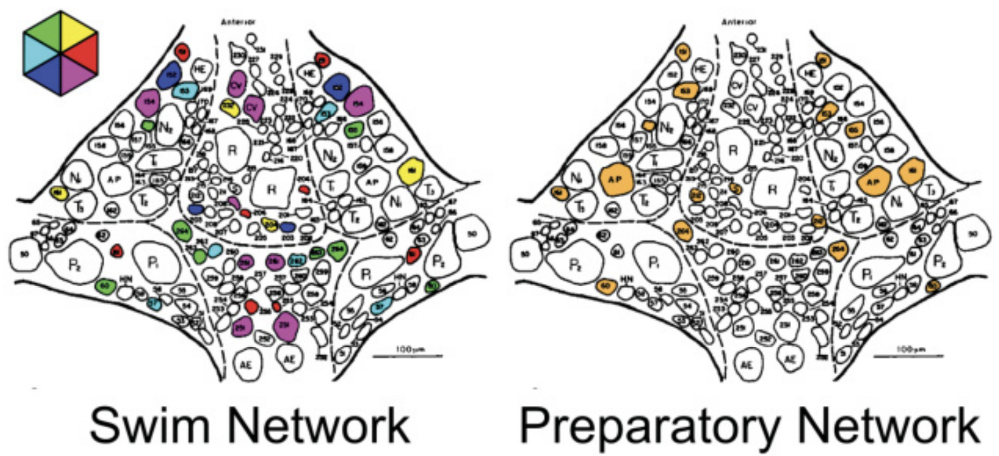
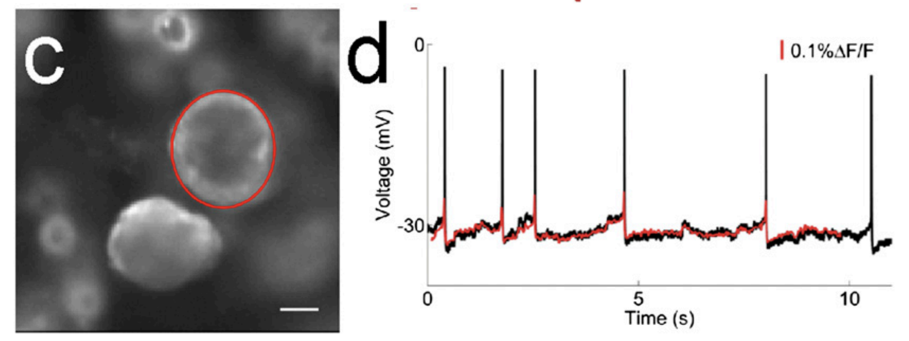
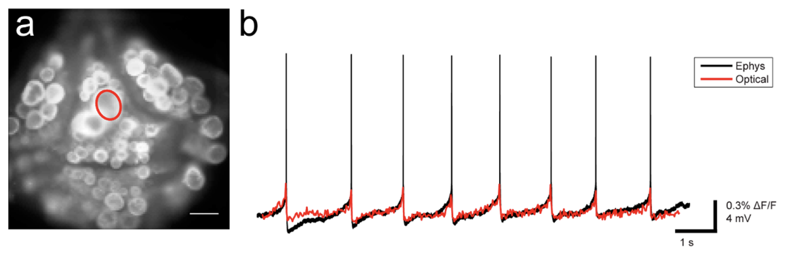
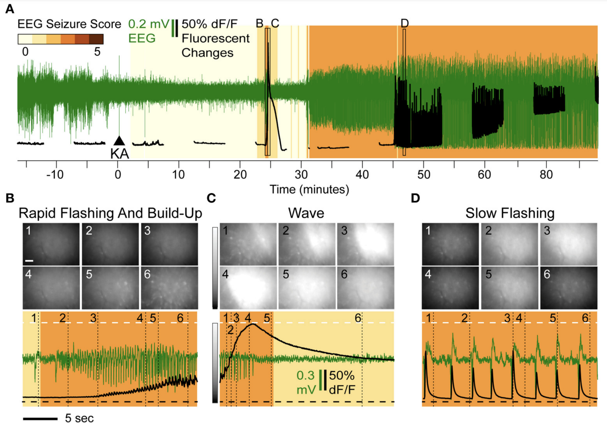
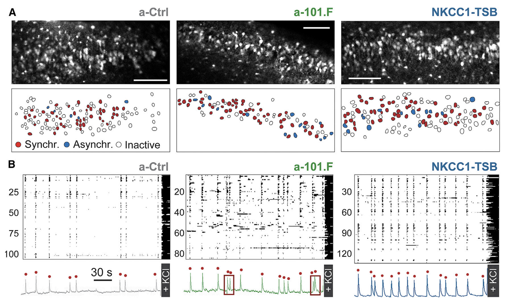
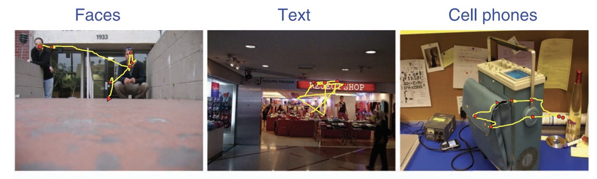
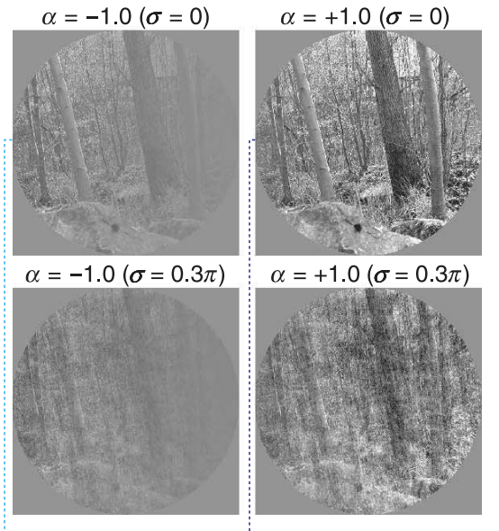

Contents
Experimental Neuroscience¶
When I started my Ph.D. in neuroscience, I became very excited about imaging for recording large-scale neural activity. In my thesis lab, I had even more of an opportunity to pioneer techniques in voltage-sensitive dye imaging.
Most of my contributions to the field were the development of algorithms and data analysis pipelines for making sense of the large-scale recordings. These were packaged up into analysis software, which was particularly useful for my thesis, allowing one to perform analysis on the imaging data quickly enough to use the results to guide follow-up experiments.
Since my thesis, I have continued to work with several groups performing large-scale neuroscience imaging experiments, providing the algorithms and data analysis pipelines for their imaging data. Modern neuroscience is very exciting with the ability to record more and more neurons, but there are still many computational and statistical analysis issues to overcome to make sense of this data.
Scalable Semisupervised Functional Neurocartography Reveals Canonical Neurons in Behavioral Networks¶
E. Paxon Frady, Ashish Kapoor, Eric Horvitz, William B. Kristan Jr. (2016) Neural Computation 28 (8): 1453–1497.

Summary¶
For my Ph.D. thesis, I used electrophysiology and voltage-sensitive dye imaging to monitor the activity of dozens of neurons in the leech ganglion while they executed various behaviors. The activity elicited during these behaviors could then be simplified into functional features, such as the phase at which a neuron oscillates during the swim behavior. By combining functional and anatomical features, homologous neurons can be identified across different animals. With this approach we identified dozens of new neurons in the leech ganglion, and built an atlas of the canonical neurons that participate in different leech behaviors.
Links¶
Optically monitoring voltage in neurons by photo-induced electron transfer through molecular wires¶
Evan W. Miller, John Y. Lin, E. Paxon Frady, Paul A. Steinbach, William B. Kristan Jr, Roger Y. Tsien. (2012) PNAS, 109 (6), 2114-2119.

Summary¶
Imaging neurons has become a major aspect of experimental neuroscience. However, most imaging of neurons is done with calcium imaging, where a molecule changes its fluorescence in response to calcium in the cell. Yet, most ideas in neuroscience focus on the voltage and spikes of the cell. Working with chemists in Roger Tsien’s group, we developed a new type of voltage-sensitive dye (VSD) molecule for use in imaging electrical activity in neurons. These dyes were incredible, and I set up simultaneous VSD imaging and electrophysiology to measure the efficacy of the dyes.
Improved PeT molecules for optically sensing voltage in neurons¶
Clifford R Woodford, E Paxon Frady, Richard S Smith, Benjamin Morey, Gabriele Canzi, Sakina F Palida, Ricardo C Araneda, William B Kristan Jr, Clifford P Kubiak, Evan W Miller, Roger Y Tsien. (2015) JACS, 137 (5), 1817-1824.

Summary¶
I had the honor of continuing to work with the Tsien lab and validate their new designs for voltage-sensitive dyes. Even better VSDs were created!
Direct Imaging of Hippocampal Epileptiform Calcium Motifs Following Kainic Acid Administration in Freely Behaving Mice¶
Tamara K. Berdyyeva, E. Paxon Frady, Jonathan J. Nassi, Leah Aluisio, Yauheniya Cherkas, Stephani Otte, Ryan M. Wyatt, Christine Dugovic, Kunal K. Ghosh, Mark J. Schnitzer, Timothy Lovenberg and Pascal Bonaventure. (2016) Frontiers in Neuroscience, 10.

Summary¶
In one of my collaborations, we characterized neural calcium activity prior to the onset of epileptic seizures in rodents. We observed systematic patterns of epileptiform calcium activity: a series of large-scale, intensifying flashes accompanied by a steady increase in cellular calcium levels was followed by an intense spreading calcium wave. This occurs before the onset of overt motor convulsions. Additionally, the anticonvulsant drug Valproate reduced the behavioral severity of seizures, but did not modify the abnormal calcium dynamics.
MicroRNA-101 regulates multiple developmental programs to constrain excitation in adult neural networks¶
Giordano Lippi, Catarina C. Fernandes, Laura A. Ewell, Danielle John, Benedetto Romoli, Giulia Curia, Seth R. Taylor, E. Paxon Frady, Anne B. Jensen, Jerry C. Liu, Melanie M. Chaabane, Cherine Belal, Jason L. Nathanson, Michele Zoli, Jill K. Leutgeb, Giuseppe Biagini, Gene W. Yeo, Darwin K. Berg. (2016). Neuron, 92 (6), 1337-1351.

Summary¶
With Darwin Berg’s group at UCSD, we used the analysis pipeline I developed to characterize calcium activity of neurons in the hippocampus during development. A critical feature of neural networks is that they balance excitation and inhibition to prevent pathological dysfunction. By comparing calcium dynamics across experimental and control groups, we showed that microRNA-101 orchestrates this balance through multiple pathways, shaping the developing network to constrain excitation in the adult.
Faces and text attract gaze independent of the task: Experimental data and computer model¶

Summary¶
The traditional saliency map model of human visual attention uses low-level visual features to attempt to predict fixational eye-movements. In this study, we showed participants images with faces, text and cell-phones to assess whether there are high-order visual features that are more salient than our models would predict. Based on the time it takes for the first fixational eye-movement to be executed, we showed that faces and text are both particularly salient and particularly fast compared to the controls and cell-phones. This suggests that some higher-order features are relevant in the bottum-up computation of the saliency map.
The relation of phase noise and luminance contrast to overt attention in complex visual stimuli¶

Summary¶
Models of visual attention, aka saliency maps, use image features to attempt to predict fixational eye-movements. These models make certain predictions about eye-movements that we tested by showing subjects images artificially modified to have different contrast-levels and/or phase-noise. Our work revealed some exceptions to the conventional saliency map model.